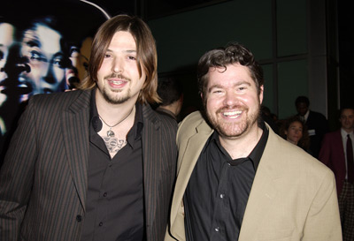
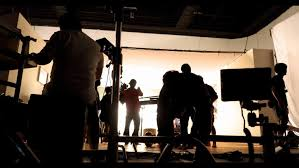
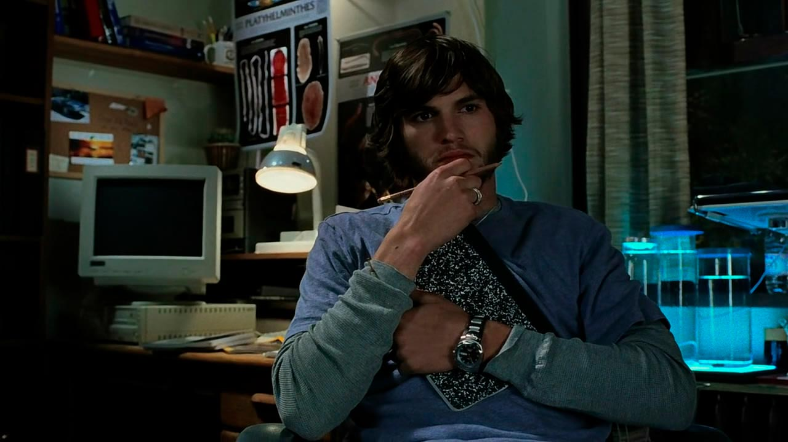
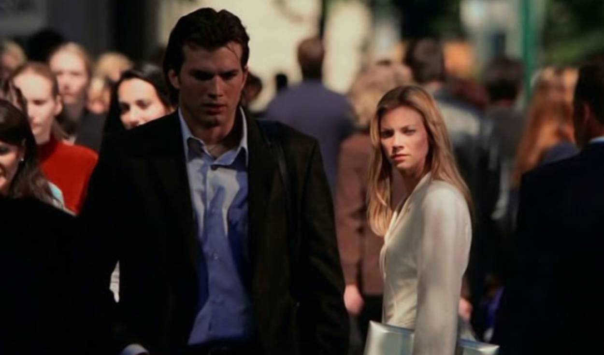

Producción y estudio de grabación
Estudios y locaciones
- La película fue dirigida por Eric Bress y J. Mackye Gruber.
- Se filmó principalmente en la ciudad de Vancouver, una locación muy utilizada en cine por su versatilidad para representar distintas ciudades de EE.UU.
- También se usaron estudios cerrados para escenas más controladas, especialmente las relacionadas con viajes en el tiempo y momentos psicológicos intensos.

Proceso de filmación
- El rodaje se enfocó mucho en cambios de atmósfera para representar las distintas líneas temporales.
- Se utilizaron variaciones de iluminación, color y encuadre para diferenciar cada realidad alternativa.
- Ashton Kutcher (Evan) tuvo un rol más dramático de lo habitual, alejándose de la comedia, lo cual fue un desafío actoral importante.
- Varias escenas se filmaron múltiples veces con pequeñas diferencias para mostrar cómo cambian los eventos según las decisiones del protagonista.

Efectos especiales
- No es una película de efectos visuales masivos, pero sí usa efectos sutiles: Transiciones mentales cuando Evan “viaja” al pasado.
- Se priorizaron efectos prácticos y edición antes que CGI pesado.

Enfoque técnico y narrativo
- La película trabaja con el concepto del efecto mariposa, donde pequeños cambios generan grandes consecuencias.
- Esto influyó directamente en:
La estructura del guion (no lineal).
La edición (saltos temporales constantes).
La narrativa fragmentada.
Datos curiosos del rodaje
- Existen múltiples finales grabados (al menos 4 versiones distintas).
- El tono oscuro sorprendió al público, ya que no era lo esperado de los actores principales.
- El presupuesto fue relativamente bajo para Hollywood (~13 millones de dólares), pero logró gran éxito comercial.
